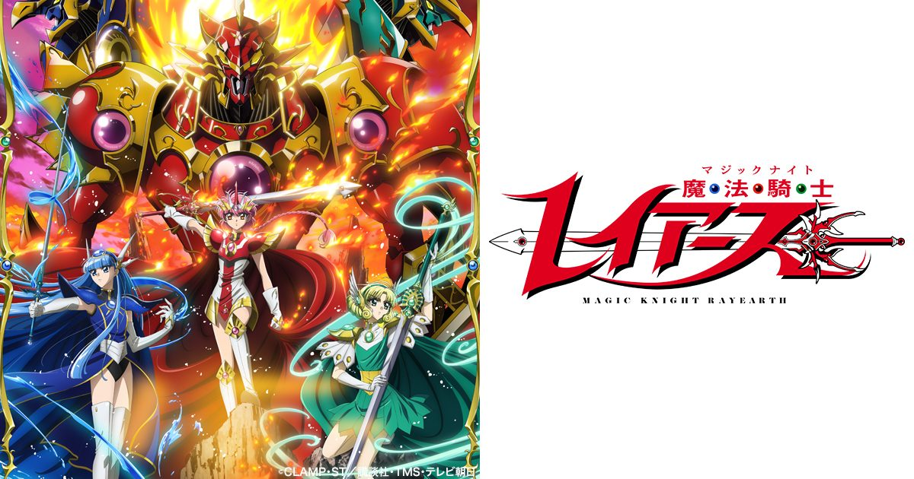

2026-08-31 · 动漫深读
当 2026 秋季档被黑咒、药屋、蓝色监狱、赛博朋克边缘行者 2 这些"续作怪兽"挤爆时，有一部复活的老 IP 反而最容易被忽略——《魔法骑士 Rayearth》确定 10/7 开播全新重制版。它不新，但它可能是很多人人生里看过的"第一个异世界"。

在 isekai 还是个冷门分类、甚至没有专门词条的年代，CLAMP 的《魔法骑士 Rayearth》（1993 漫画 / 1994 动画）就已经把"三个普通女孩被召唤到异世界拯救公主、还能开巨型魔神"的公式写完了。今天你能在无数作品里看到它的影子，但原作当年在中文圈的讨论度，远不如后来那些"转生流"。31 年后它回来，恰逢 isekai 产能过剩、观众开始审美疲劳——这反而成了它最好的回归时机。
先说已经锁死的信息：10/7 起在 TV Asahi 的 IMAnimation W 深夜档（周三 23:45）开播；动画由 E&H production 制作（《Ninja Kamui》《Bullet/Bullet》班底），Kadokawa 与 TMS 监修，企划方是 UNLIMITED PRODUCE by TMS。导演三浦唯，剧本统筹村越繁，角色设计渡部里美，音乐由梶浦由记携手尾泽拓実、寺田志保——光这个配乐阵容，就已经让老粉心跳加速。
声优阵容也相当"针对性"：佐仓绫音配狮堂光（炎）、大久保瑠美配龙咲海（水）、高桥李依配凤凰寺风（风）；配角更豪华——早见沙织的艾梅洛德公主、小野友树扎加托、菊地美香摩可拿、梶裕贵克莱夫、加藤英美里普蕾西亚、松冈祯丞菲里奥。7 月 4 日它还在 Anime Expo 做了 1–2 集全球首映，高桥李依与早见沙织到场——把" nostalgia 资产"先丢给洛杉矶那批当年用录像带追番的观众，这步棋很准。
第一，它是"忠于 manga"的一次补课。1994 动画第二季为了等原作进度，自己编了一大段原创剧情，导致很多观众对 Rayearth 的印象停在那个偏离版。这次官方明确"基于 CLAMP 原作"，等于把被动画改歪的那一半重新扶正——对老粉是情怀落地，对新人是第一次看到"完整版"。
第二，它补上了"少女视角机甲 isekai"这块长期空白。现在的 isekai 九成是男主开无双，女性主角要么谈恋爱要么当挂件。Rayearth 三个女孩既要解谜、又要驾驶魔神（Rayearth / Ceres / Windam）作战，情感线和战斗线并重——放在 1994 是先锋，放在 2026 反而又成了稀缺品。
第三，它和今年另一波"90 年代经典重制潮"同频：《乱马½》第三季（MAPPA）、CLAMP 自家宇宙被反复翻新，说明日本动画业正在用"高完成度的老 IP + 现代作画"对冲原创风险。Rayearth 的赌注不是创新，而是"把经典用今天的技术重新交付一次"。
田村直美那首《ゆずれない願い》是整代人的肌肉记忆。重制版换梶浦由记操刀，老粉已经在敲碗："求别动 OP"。我们判断制作方大概率会保留旋律精神、用新编曲致敬——这既是情怀保险，也是对新听众的友好。真正的风险在于：原作第二部转向相当黑暗（涉及"拯救公主"动机的根本反转），这种先甜后刀的节奏，能不能留住被轻松 isekai 惯坏的新观众，才是口碑分化的关键。
《魔法骑士 Rayearth》2026 重制版不是来"抢占秋季档"的，它是来提醒观众的：在所有人都在发明新异世界之前，早就有人把这套语法写好了。10/7 开播，新观众可以从第一集无缝入坑（它本就是独立召唤开局），老观众则终于能补上当年被动画改走的那个真正结局。无论你属于哪一边，这都是 2026 秋天最值得给一次机会的"复古新番"。
我们的评分：8.5 / 10（基于制作阵容与企划诚意预判，开播后按实际作画/叙事兑现度复核）。
我们的观察：这次复活选在 30 周年节点、用"忠于原作 + 梶浦配乐"双保险，明显是冲着 25–45 岁那批有消费力的老粉来的；但深夜档 23:45 的编排，也透露出电视台对它"基本盘稳、破圈难"的清醒预期。
我们的观点：在 isekai 严重同质化的 2026，Rayearth 的差异化不是"更燃"，而是"更古典也更完整"。它卖的不是爽感，是一整套被时间验证过的情感结构。
我们的案例 / 对比：和同季《乱马½ S3》《药屋 S3》摆一起看——三者都是"老 IP 现代重制"，但 Rayearth 的稀缺度最高：它是唯一一部"少女 + 机甲 + isekai"的始祖级作品，且没有前作动画的烂摊子要收拾（乱马有 OVA 争议、药屋有节奏质疑）。
我们的实验：我们打算开播后做一组"零基础 vs 老粉"双视角追番笔记：一边记录新人能否在 eps1–3 内理解三女孩+魔神设定，一边对照老粉对"第二部黑化"的接受度。结论会回填到本文，作为长线观察。